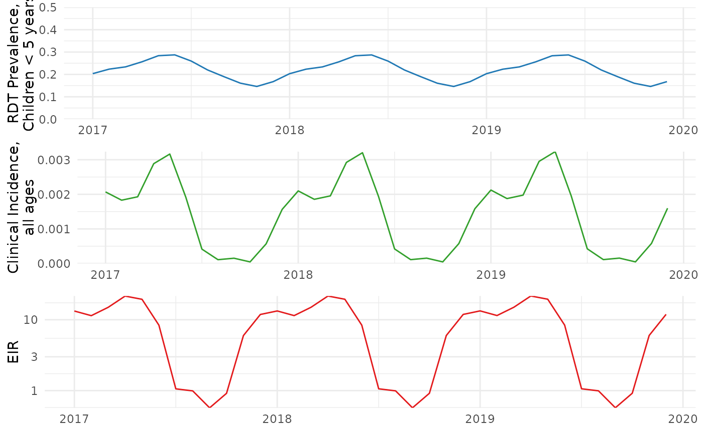
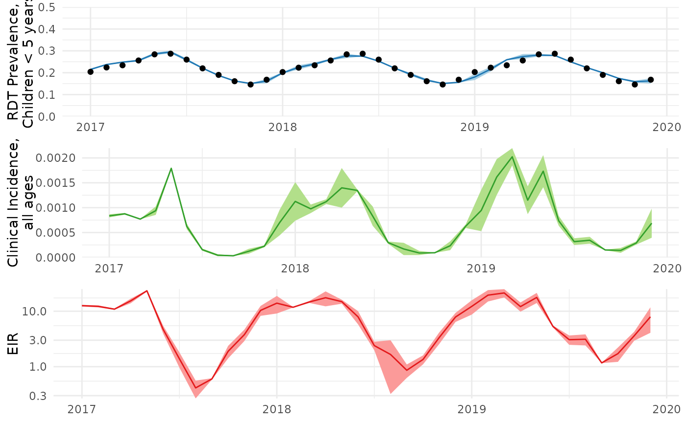

Using anatembea to Reconstruct Transmission Patterns: A Vignette
2025-10-24
Source:vignettes/anatembea_intro.Rmd
anatembea_intro.RmdIn this vignette, we demonstrate how to use anatembea to reconstruct patterns of transmission intensity, seasonality, and malaria burden in settings where women are screened for malaria (using either rapid diagnostic tests or slide microscopy) with data available at a monthly cadence. Later vignettes will explore scenarios involving different data cadences or stratifications (e.g., by gravidity).
Understanding our approach
anatembea is a tool designed to integrate Dust, Odin, and MCState frameworks for fitting a semi-stochastic mechanistic disease transmission model to continuously collected prevalence data using particle Markov chain Monte Carlo (pMCMC). This package specifically fits a semi-stochastic version of the ‘malariasimulation’ model to monthly malaria prevalence among pregnant women at their first antenatal care (ANC1) visit. This vignette walks through a simple example and outlines various configurable options and settings.
In the deterministic version of ‘malariasimulation’, seasonal variation in malaria transmission intensity is governed by a Fourier series, with coefficients pre-estimated from historical rainfall data. While this method provides reasonable seasonal profiles for fitting cross-sectional data collected at multi-year intervals (such as data from Demographic Health Surveys or Malaria Indicator Surveys), it lacks the flexibility required for fitting models to monthly prevalence data collected through ANC1.
To enhance flexibility, we replaced the deterministic seasonal mechanism with a stochastic process. Specifically, mosquito emergence rates now vary according to a random-walk process, where the monthly change in mosquito emergence rate is modelled as: Emergence rate change = δ∼N(0,σ).
Here, σ is a volatility constant, and β, the mosquito emergence rate, is constrained by an upper limit βmax to maintain realism. The pMCMC filters likely emergence rate trajectories by comparing the observed prevalence with the model’s estimated prevalence based on these trajectories. The output is a posterior distribution of plausible model trajectories.
Since the relationship between mosquito emergence rates and infection prevalence is encoded within the mechanistic model, anatembea allows us to infer trends in key indicators like the entomological inoculation rate (EIR) and clinical incidence, which are otherwise challenging to measure directly.
Generating a test dataset
At its core, our approach leverages the established relationships between temporal infection prevalence dynamics, transmission, and clinical burden, as defined in the malariasimulation model. Consequently, we can validate the inferential framework by generating simulated datasets from the model and verifying that anatembea correctly recaptures the underlying seasonal dynamics.
For this vignette, we use a simulation based on rainfall patterns in Tanga, Tanzania, where rainfall follows a characteristic bimodal pattern. This includes:
- A short rainy season (March–May)
- A longer rainy season (November–January)
- An extended dry season (June–October)
Bimodal rainfall patterns, such as those in Tanga, often present a challenging inferential problem for many algorithms attempting to estimate seasonality. However, by applying anatembea, we aim to recapture these complex dynamics without supplying the model with prior information about the simulation parameters.
The resulting relationship between malaria prevalence, clinical incidence, and EIR in Tanga, Tanzania is illustrated below:
library(dplyr)
#>
#> Attaching package: 'dplyr'
#> The following objects are masked from 'package:stats':
#>
#> filter, lag
#> The following objects are masked from 'package:base':
#>
#> intersect, setdiff, setequal, union
library(ggplot2)
data_true <- anatembea::sim_data_tanzania%>%
dplyr::filter(month<=zoo::as.yearmon('Dec 2019'))
prev_plot_true <- ggplot(data=data_true)+
geom_line(aes(x=month,y=prev_05_true),color="#1F78B4")+
scale_y_continuous(limits=c(0,0.5),expand=c(0,0))+
labs(y='RDT Prevalence,\nChildren < 5 years')+
theme_minimal()+
theme(axis.title.x = element_blank())
inc_plot_true <- ggplot(data=data_true)+
geom_line(aes(x=month,y=clininc_all_true),color="#33A02C")+
scale_y_continuous(limits=c(0,NA),expand=c(0,0))+
labs(y='Clinical Incidence,\nall ages')+
theme_minimal()+
theme(axis.title.x = element_blank())
eir_plot_true <- ggplot(data=data_true)+
geom_line(aes(x=month,y=EIR_true),color="#E31A1C")+
scale_y_log10(expand=c(0,0))+
labs(y='EIR')+
theme_minimal()+
theme(axis.title.x = element_blank())
library(cowplot)
combined_ggplot_true <- cowplot::plot_grid(prev_plot_true,inc_plot_true,eir_plot_true,ncol=1)
# combined_ggplot <- prev_plot+inc_plot+eir_plot+plot_layout(ncol=1)
combined_ggplot_true
Input Data
Data for fitting should be a data frame with at least three columns:
-
month: Month (here formatted as ‘yearmon’, provided by the package ‘zoo’) -
tested:The number of individuals tested -
positive: Of those tested, the number of positive test results
In our example “tanga_data_slim” samples in the correct format have been generated by sampling binomially from infection prevalence from the simulation presented above.
tanga_data_slim <- anatembea::sim_data_tanzania%>%
dplyr::select(month,positive,tested)%>%
dplyr::filter(month<=zoo::as.yearmon('Dec 2019'))
head(tanga_data_slim, 5)
#> month positive tested
#> 1 Jan 2017 204 1000
#> 2 Feb 2017 224 1000
#> 3 Mar 2017 234 1000
#> 4 Apr 2017 256 1000
#> 5 May 2017 284 1000Running a pMCMC fitting
The run_pmcmc function is the central tool to fit our
model to observed data. It formats the provided data set, sets up
required functions and parameters, and finally runs the pMCMC. Broadly,
the flow of actions is as follows:
- Process provided data set, specifically formatting necessary time variables.
- Format and declare parameters. These include both constant or known parameter values needed for malariasimulation as well as pMCMC parameters that will be fit.
- Set particle filter and pMCMC settings.
- Run the pMCMC.
- Format output.
result <- anatembea::run_pmcmc(data_raw=tanga_data_slim,
n_particles=100,
target_prev = 0.4,
n_steps = 10)
#> ── R CMD INSTALL ───────────────────────────────────────────────────────────────
#> * installing *source* package ‘odin.model.stripped.seasonal605da84f’ ...
#> ** this is package ‘odin.model.stripped.seasonal605da84f’ version ‘0.0.1’
#> ** using staged installation
#> ** libs
#> using C compiler: ‘gcc (Ubuntu 13.3.0-6ubuntu2~24.04) 13.3.0’
#> gcc -std=gnu2x -I"/opt/R/4.5.1/lib/R/include" -DNDEBUG -I/usr/local/include -fpic -g -O2 -UNDEBUG -Wall -pedantic -g -O0 -fdiagnostics-color=always -c odin.c -o odin.o
#> odin.c: In function ‘odin_model_stripped_seasonal_initial_conditions’:
#> odin.c:2309:10: warning: unused variable ‘t’ [-Wunused-variable]
#> 2309 | double t = scalar_real(t_ptr, "t");
#> | ^
#> gcc -std=gnu2x -I"/opt/R/4.5.1/lib/R/include" -DNDEBUG -I/usr/local/include -fpic -g -O2 -UNDEBUG -Wall -pedantic -g -O0 -fdiagnostics-color=always -c registration.c -o registration.o
#> gcc -std=gnu2x -shared -L/opt/R/4.5.1/lib/R/lib -L/usr/local/lib -o odin.model.stripped.seasonal605da84f.so odin.o registration.o -L/opt/R/4.5.1/lib/R/lib -lR
#> installing to /tmp/RtmpWZ3BaI/devtools_install_1f632955062a/00LOCK-file1f63315ca4d4/00new/odin.model.stripped.seasonal605da84f/libs
#> ** checking absolute paths in shared objects and dynamic libraries
#> * DONE (odin.model.stripped.seasonal605da84f)
#> Unused equation: age_flex_length
#> age_flex_length <- user(integer=TRUE) # (line 485)
#> Optimizing initial EIR based on target prevalence.
#> Initial EIR set to 29.3.
#> Running chain 1 / 1
#> Finished 10 steps in 48 secs
#> Time difference of 53.19219 secs
result <- anatembea::run_pmcmc(data_raw=tanga_data_slim,
n_particles=100,
target_prev = 0.4,
n_steps = 10,
comparison = 'u5')
#> Unused equation: age_flex_length
#> age_flex_length <- user(integer=TRUE) # (line 485)
#> Optimizing initial EIR based on target prevalence.
#> Initial EIR set to 29.3.
#> Running chain 1 / 1
#> Finished 10 steps in 53 secs
#> Time difference of 57.72693 secsVisualising output
We can then visualise how well the pMCMC fit to the prevalence data, as well as unobserved transmission metrics like clinical incidence in the entire population and the entomological inoculation rate (EIR).
measure_names <- c('prev_05','clininc_all','EIR','betaa')
months <- tanga_data_slim$month
timelength <- length(months)
num_months <- length(result$history[1,1,])
start_month_index <- (num_months-timelength+1)
mcmc <- result$mcmc[,]
ar <- 1 - coda::rejectionRate(coda::as.mcmc(mcmc))
ess <- coda::effectiveSize(coda::as.mcmc(mcmc))
pars_list <- names(mcmc)
history.dfs <- lapply(measure_names,function(x){
as.data.frame(t(result$history[x,,start_month_index:num_months]))%>%
dplyr::mutate(month=months)%>%
reshape2::melt(id='month')%>%
dplyr::group_by(month)%>%
dplyr::summarise(median=median(value),
upper=quantile(value,probs=0.975),
lower=quantile(value,probs=0.025))%>%
dplyr::mutate(measure=x)
})
names(history.dfs) <- measure_names
prev_plot <- ggplot(data=history.dfs[['prev_05']])+
geom_ribbon(aes(x=month,ymin=lower,ymax=upper),fill="#A6CEE3")+
geom_line(aes(x=month,y=median),color="#1F78B4")+
geom_point(data=tanga_data_slim,aes(x=month,y=positive/tested),fill='black')+
scale_y_continuous(limits=c(0,0.5),expand=c(0,0))+
labs(y='RDT Prevalence,\nChildren < 5 years')+
theme_minimal()+
theme(axis.title.x = element_blank())
inc_plot <- ggplot(data=history.dfs[['clininc_all']])+
geom_ribbon(aes(x=month,ymin=lower,ymax=upper),fill="#B2DF8A")+
geom_line(aes(x=month,y=median),color="#33A02C")+
scale_y_continuous(limits=c(0,NA),expand=c(0,0))+
labs(y='Clinical Incidence,\nall ages')+
theme_minimal()+
theme(axis.title.x = element_blank())
eir_plot <- ggplot(data=history.dfs[['EIR']])+
geom_ribbon(aes(x=month,ymin=lower,ymax=upper),fill="#FB9A99")+
geom_line(aes(x=month,y=median),color="#E31A1C")+
scale_y_log10(expand=c(0,0))+
labs(y='EIR')+
theme_minimal()+
theme(axis.title.x = element_blank())
combined_ggplot <- cowplot::plot_grid(prev_plot,inc_plot,eir_plot,ncol=1)
# combined_ggplot <- prev_plot+inc_plot+eir_plot+plot_layout(ncol=1)
result$output <- combined_ggplot
result$output